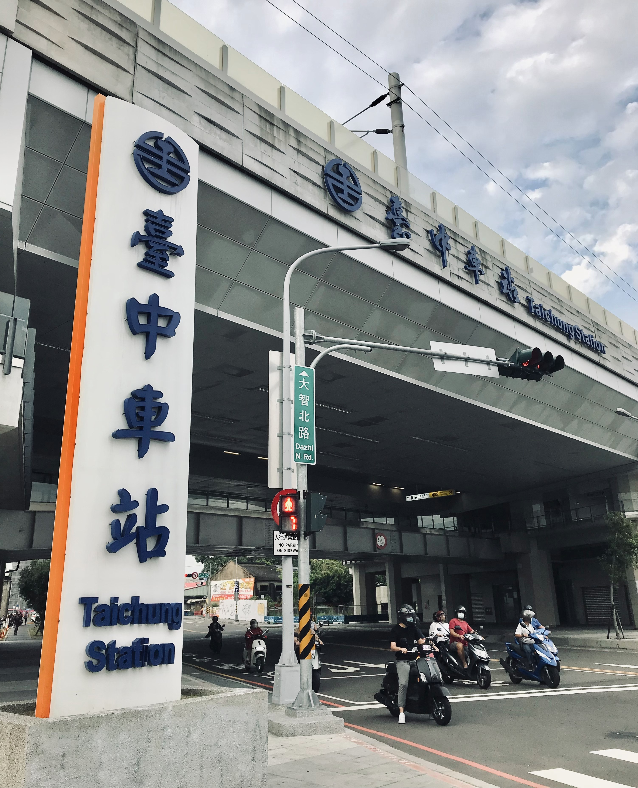

-
以前...以前...
-
被火紋身，之後
-
最後一根稻草
-
新的消費景觀，新的消費族群
-
串起時空的大智路
日治時期對於臺中火車站的建設，加速了臺中都市化發展的程度，1908年日本政府在臺中進行了市區改正都市計畫，形塑了今日站前街道輪廓，並將臺中打造成臺灣中部的貨物集散地與交通轉運中心，日治時期的行政機關臺中州廳、臺中市役所也鄰近火車站，許多商人為了買賣來到臺中，其中蘊含的商機，使得臺中工商業的崛起，像是1908年興建的第一市場（現為東協廣場），原為臺灣日治時期位於台中市榮町的第一座新式傳統市場，而隨著人口的增加，1917年又增建了第二市場。火車站改變了臺中市街屬性，吸引周圍新村聚落人口暫時性甚至永久性移動到此，也造就市街產業變遷。
以前的中正路和自由路是台中最熱鬧的地方。站在舊台中火車站前，面對的那條馬路正是以前的中正路，在2012年時改名為台灣大道一段。台中舊城區也就是現在的中區，是臺中市市街的核心地區，涵蓋大部份的商業區，有許多老式建築物佇立在繁華的商圈中，如彰化銀行、合作金庫等，在傳統商店與新興產業長期發展下，也逐漸形成各種特色商街，如自由路的「太陽餅街」、成功路90巷的「青草街」、布莊林立的「繼光街」、三民路的「婚紗喜餅街」、興中街的「糖果街」，還有眾多百貨公司在此聚集，像是龍心百貨、遠東百貨等，聽說龍心百貨上的「搖滾樂」是老台中人的共同回憶。台中舊城區雖然充滿著獨特的魅力，但不可諱言地，這裡就像台灣各地許多城市裡的舊市區一樣，面臨著產業沒落、居民外移、空屋閒置等深刻的議題。
1970、1980 年代以後，臺中火車站附近舊市區的交通堵塞問題日益嚴重，一個接著一個興起的重劃區和商圈分散了臺中火車站附近的人潮，國道高速公路與客運據點也都在臺中西半部設點，加速了臺中舊市區的人口外移。當時火車站附近也常常發生火災，一九九五年衛爾康西餐廳大火後，消防法規的管制變得更為嚴格，中區的房屋老舊，大多無法符合相關的規定，而新興的重劃區卻能提供成本較為低廉的土地，並能輕易地符合消防規定以快速取得使用執照，舊市區的推力與重劃區的拉力，使原本十分蓬勃發展的百貨公司、商場等紛紛出走至重劃區，也因此促成了舊市區的逐漸沒落。且隨著高速公路與區域道路的到位，以鐵路運輸作為核心功能的舊市區，無法避免的陷入衰敗的命運。
2003年肆虐全台的傳染病SARS，這場大規模的流行傳染病是擊垮臺中火車站周圍繁榮的最後一根稻草，因當時SARS的傳染途徑以飛沫傳染為主，除了戴口罩外儘量少去公共場所與密閉空間都是當時避免傳染與疫情擴散的方式，因此少搭大眾運輸工具也是當時一般大眾的避免傳染方式，SARS的影響也反映在臺中火車站的運輸人次上，旅客人數大幅減少，火車站周邊的商業活動跌到谷底，經營一甲子的豐中（1944-2004）、南華等戲院也倒閉退場。
因政府開放引進外籍勞工，大約從2000年開始，火車站對一群人有了不同的意義，臺中市區內的外籍移工們日漸增多，他們在周末都會與同鄉的人們相約，聚集東協廣場活動，他們會選擇聚集在東協廣場是因為他們的移動仰賴大眾運輸工具，而臺中火車站，正是一個移動的轉運點。我對東協廣場的第一印象其實是不太好的，第一次經過它的時候是平日晚上，商店緊閉，燈光昏暗，遇到的人也只有外籍清潔工，加上現在新冠肺炎疫情的關係讓我當時帶著畏卻的心走出廣場。而因為學校的課程，因緣際會下我參與了1095，文史工作室的東協廣場走讀導覽，我瞭解了廣場的運作模式、移工們的日常生活，雖然建物外表老舊，但實際走進裡面後，才發現裡面很其實很乾淨、明亮，這次的導覽讓我對東協廣場改觀，走進我平常看不見的風景，也發現了台中火車站和東協廣場繫起了這些外籍移工對家鄉的情感連結，以及對於他們的重要性。而他們也為台中帶來了新的消費景觀，讓台中更多元化發展。
如前文所提到，台中火車站的興設，讓台中市的中區跟東區呈現出不同調的發展速度，對比前站的巴洛克式豪華建築，後站簡單的斜頂平房，窄小的入口，像個悠閒寧靜的鄉下小車站，與世隔絕，但說白了，也就是較不像個大城市火車站該有的樣子，後站周邊的氛圍和前站也大不相同，像前面提到熱鬧的東協廣場、第二市場、戲院都位於站前商圈的中區。以前，從後站到前站必須經過一個地下道，聽說地下道裡會有不少流浪漢、街友，他們以地下道為家，這種情景大大的破壞了市容也造成了安全上的疑慮。不過，現在隨著鐵道高架化、2020年大智路打通後也讓東區開始興盛了起來，整潔明亮的大智路串起了中區和東區的發展，也讓民眾不必再繞道而行，交通更加順暢。
